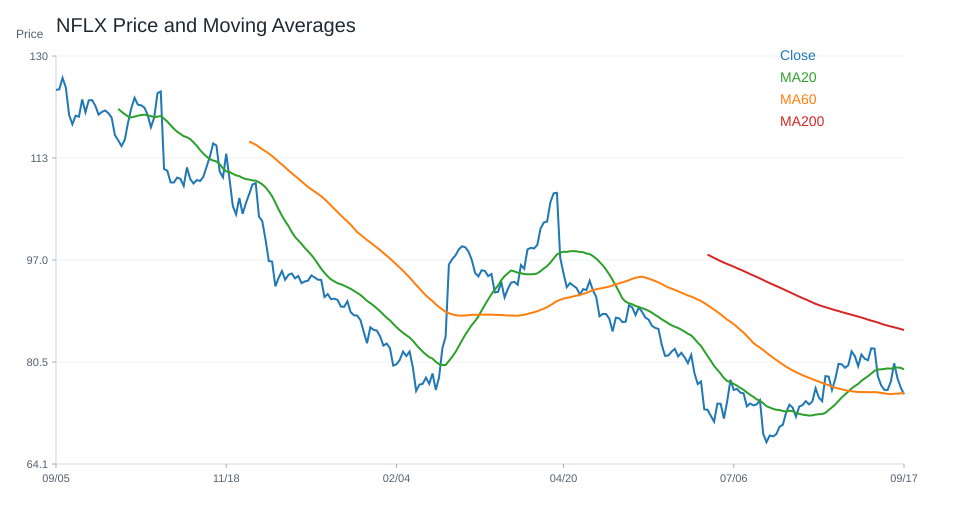
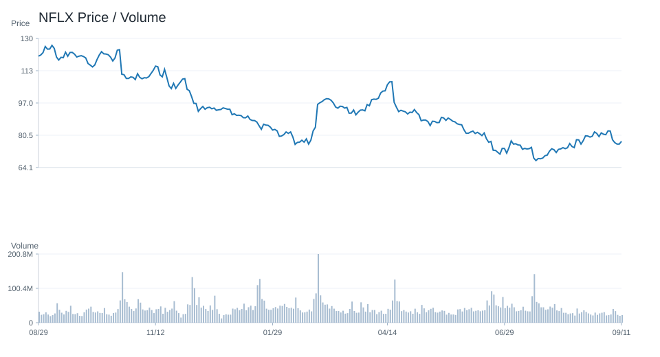
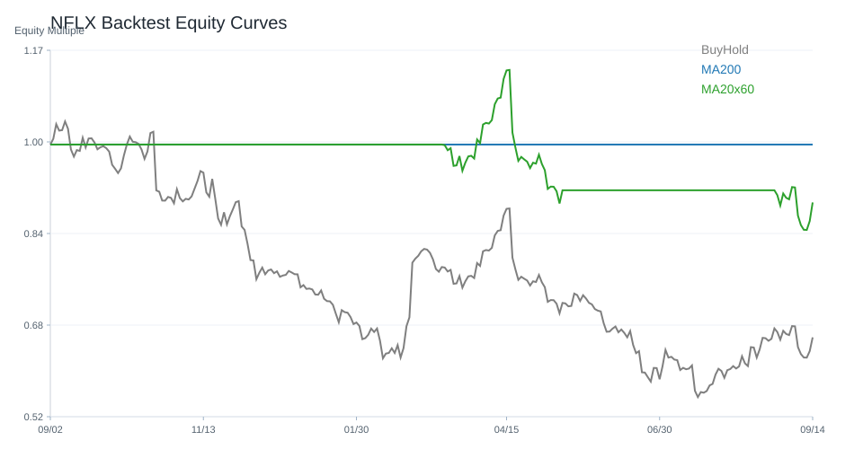

20 日
-4.75%60 日
-21.42%觀察等級
正向觀察市場資料
2026-07-02- 成交量55,456,500.00
- 20 日均線77.27
- 60 日均線87.00
- 200 日均線96.10
- 距 52 週高點-40.14%
- 距 52 週低點9.52%
技術指標
Python 計算- RSI1447.28
- MACD hist0.33
- KD K/D46.14 / 26.97
- ADX37.69
- 布林上緣85.46
- 布林下緣69.08
量價與事件
規則式分析- 量價型態量能中性
- 量價分數0
- 20 日量比1.12
- OBV 20 日變化-8.20%
- 事件偏向事件中性
- 事件分數0
研究訊號與觀察等級
不是買賣建議正向觀察；研究訊號 偏多，分數 3。
部分條件偏正向，可持續追蹤後續資料是否延續。
- 60 日趨勢偏弱
- 站上 20 日均線
- 跌破 200 日均線
- RSI 位於中性偏強區
- MACD histogram 為正
- KD 偏多但未過熱
- ADX 顯示趨勢強度較高
- 量價型態：量能中性
回測摘要
歷史資料研究| 策略 | CAGR | Sharpe | 最大回撤 | 勝率 | 交易次數 |
|---|---|---|---|---|---|
| 價格高於 200 日均線 | 27.28% | 1.06 | -29.61% | 52.69% | 5 |
| 20/60 日均線交叉 | 23.56% | 0.89 | -26.09% | 50.57% | 8 |
| 買進持有 | 43.21% | 1.13 | -47.06% | 50.90% | 1 |
圖表
價格 / 量價 / 回測NFLX

NFLX

NFLX
